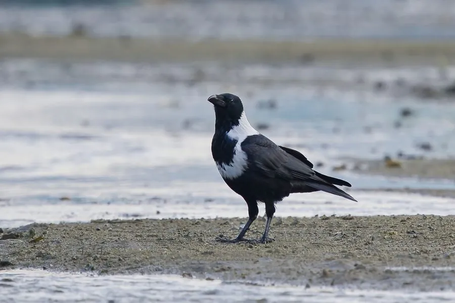

鸟类 · 动物界
白颈鸦 Corvus torquatus

黑色鸦类，颈侧至前胸有一圈醒目的白色羽环，故名白颈。仅分布于中国东部至越南北部，数量持续下降，被列为易危物种。
- 分类
- 门脊索动物门纲鸟纲目雀形目科鸦科属鸦属
- 栖息环境
- 低山丘陵、农田、河谷、村落、城市边缘与沿海湿地，常在地面觅食。
- 地理分布
- 中国东部、中部至越南北部，为中国特有繁殖鸟，分布区呈碎片化。
- 保护级别
- IUCN 红色名录列为易危（VU）；中国列入“三有”陆生野生动物名录，种群数量下降。
物种志
白颈鸦体长约四十四至五十厘米，体重三百至五百克。通体黑色，头、背和翼羽具蓝绿色金属光泽，最显著的特征是颈侧、后颈和前胸连成一条宽阔的白色羽环，像戴了一条白围巾。喙粗壮黑色，虹膜深褐，脚黑色。雌雄外形相似，雄鸟体型略大。幼鸟白色颈环较窄，颜色偏灰。
它栖息于低山丘陵、农田、河谷、村落与城市边缘，多单独、成对或结成小群在地面觅食，食物包括昆虫、蚯蚓、谷物、果实、腐肉和人类丢弃的食物。繁殖期在树上或建筑物上营巢，每窝产卵三至五枚。白颈鸦是中国特有繁殖鸟，分布于中国东部、中部至越南北部，但近几十年来种群数量明显下降，原因可能与农药使用、栖息地改变和人为干扰有关，现被列为易危物种，并列入“三有”名录。
形态与习性
- 体长44–50 厘米
- 体重300–500 克
- 食性昆虫、蚯蚓、谷物、果实与腐肉
- 繁殖树上或建筑营巢，每窝 3–5 枚
- 分布中国东部至越南北部
- 保护级别IUCN 易危；“三有”动物
趣味知识
- 白色颈环从后颈一直连到前胸，像一条白围巾。
- 是中国特有繁殖鸟，分布区正日益碎片化。
- 常在地面步行觅食，步态沉稳。